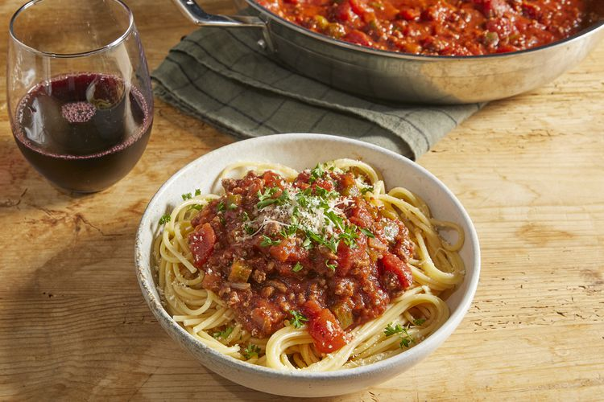

It seems like everyone I have ever met has “a spaghetti recipe” they know
and love, and each one is different! Some have store-bought sauce, some
homemade. Some have meat, some have veggies, and others don’t.
There's nothing like classic spaghetti and meat sauce to bring people
together around the dinner table. This homemade spaghetti sauce with
ground beef recipe will satisfy all your comfort food cravings.
Ingredients
- 1 pound ground beef
- 1 medium onion, chopped
- 4 gloves garlic, minced
- 1 small green bell pepper, diced
- 1 (28 ounce) can diced tomatoes
- 1 (16 ounce) can tomato sauce
- 1 (6 ounce) can tomato paste
- 2 teaspoons dried oregano
- 2 teaspoons dried basil
- 1 teaspoon salt
- 1/2 teaspoon ground black pepper
How to make Homemade Spaghetti Sauce with Ground Beef
-
Step 1: Combine ground beef, onion, garlic, and green
pepper in a large saucepan over medium-high heat. Cook and stir until
meat is browned and crumbly and vegetables are tender, 5 to 7 minutes.
Drain grease.
-
Step 2: Season with oregano, basil, salt, and pepper.
Simmer spaghetti sauce for 1 hour, stirring occasionally.
The information gathered was from
allrecipes.
Return to Top of Page
Return to Main Page